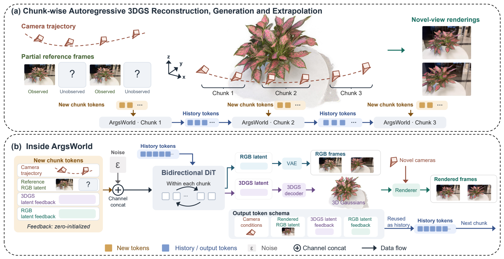

ArgsWorld
Unifying 3DGS Scene Reconstruction, Generation and Extrapolation with Autoregressive Diffusion Transformer
1 Tsinghua Shenzhen International Graduate School, Tsinghua University
2 Harbin Institute of Technology
† Corresponding authors. · ‡ Project lead.
Reconstruction
Posed images + camera path
Recover a 3D Gaussian scene from sparse posed views and render it from new viewpoints.
Playback failed. Open the video file.
Garden pond
Nature
Generation
Text prompt + camera path
Generate a 3D Gaussian scene from a text prompt and explore it along a specified camera path.
Playback failed. Open the video file.
Ceramics gallery
Interiors
Extrapolation
Reference image + extended path
Extend a scene along a longer camera path from a single reference image.
Playback failed. Open the video file.
Living and dining room
Interiors
Architecture
ArgsWorld uses a shared autoregressive diffusion transformer to generate camera-conditioned views and build an explicit 3D Gaussian scene.


- Condition on cameras
- Specify a camera path alongside posed images, a text prompt, or both.
- Predict RGB and 3D jointly
- Keep historical RGB latents fixed while denoising new views and updating the Gaussian scene.
- Train on model rollouts
- 3D Self-Forcing Distillation supervises the model’s own rollouts in image and rendering space, with four denoising steps per chunk at inference.
Citation
@unpublished{chen2026argsworld,
title = {ArgsWorld: Unifying 3DGS Scene Reconstruction, Generation and Extrapolation with Autoregressive Diffusion Transformer},
author = {Chen, Weiming and Liu, Shuaiyan and Shao, Xinyu and Chen, Zhewen and Guan, Tian and He, Yonghong and Ling, Xitong},
year = {2026},
note = {Preprint}
}